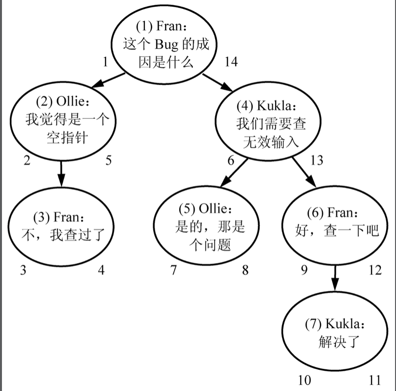
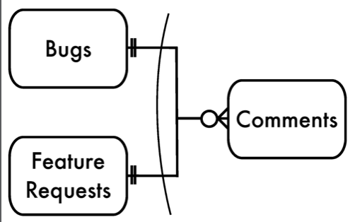
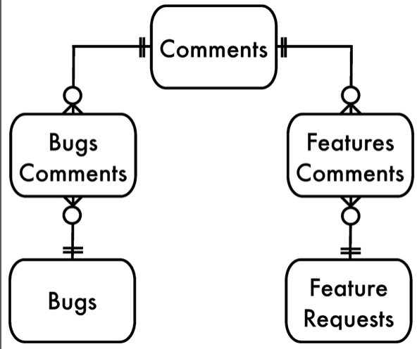
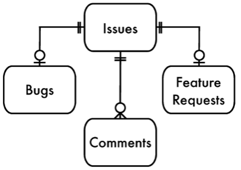

Anti Pattern At DB Logical Design
Cross Roads
| Key | Value |
|---|---|
| Target | save multiple value in one attributes |
| Relationship | many to one |
| Anti-Pattern | use “;” as seperate symbol to store multiple values. |
| Notice | ez to append, hard to select/delete one value in this attribute |
| Normal-Pattern | extra join table |
Example:
| id | tags |
|---|---|
| 1 | ‘hello;how are you;this;that’ |
| 2 | ‘know;what;test;try’ |
Tree
| Key | Value |
|---|---|
| Target | store a tree like structure. |
| Scene | show folder tree, display Comments tree. |
| Anti-Pattern | always depends on parent, set a parent ID. |
| Notice | tree can only be 1-2 tier deep. |
| Normal-Pattern | store path, embeded set, closure table |
Example:
| id | parent_id | comment |
|---|---|---|
| 1 | null | is this a bug |
| 2 | 1 | yes |
| 3 | 2 | may be not |
| 4 | 1 | should discuss |
Path Example:
| id | path | comment |
|---|---|---|
| 1 | / | XXX |
| 2 | /1/ | XXX |
| 3 | /1/2/ | XXX |
| 4 | /1/2/3/ | XXX |
Embeded Example:

| id | left | right | comment |
|---|---|---|---|
| 1 | 1 | 6 | XXX |
| 2 | 2 | 3 | XXX |
| 3 | 4 | 5 | XXX |
based on left and right range, can be ez to select children nodes and parent nodes
Clousure: use space in exchange time, extra relationship table
for every node, find its all descendants and store 1-1 relationship.
for example:
tree node 1 as root, left is 2, right is 3. 3’s left is 4.
you have to store all relationships:
1-1 1-2 1-3 1-4
2-2 3-3 3-4 4-4
then select/delete/insert/move sub tree can be ez to use a single join with comment table
Need ID
| Key | Value |
|---|---|
| Target | need ID column as primary key |
| Anti-Pattern | always define a ID column as primary key |
| Notice | extra space, and redundent. |
| Normal-Pattern | use combination as primary key. name like XXX_id instead of id only. |
No Keys
| Key | Value |
|---|---|
| Target | simplify the DB relationship. |
| Anti-Pattern | don’t use a foreign key to enforce a relationship. |
| Notice | can’t have cascade operation, may be have false operations. |
| Normal-Pattern | use foreign key and define cascade policy. |
Multiple Columns
| Key | Value |
|---|---|
| Target | store multiple columns like Tag1, Tag2 |
| Scene | one article has multiple tags. |
| Anti-Pattern | multiple similar keys in one table |
| Normal-Pattern | seperate into extra table. |
Dynamic value
| Key | Value |
|---|---|
| Target | fit for future biz changes |
| Scene | dynamic attributes to be added based on user input. |
| Anti-Pattern | use attributes table and belongs to parent table. EAV(entity-attribute-value) |
| Notice | simple design, but hard to use for CRUD. |
| Normal-Pattern | may be think about NO-SQL. if you have to deal with it, try class-per-table, single-table, store blob/json |
Example:
issue: issue_id
issues_attributes: issue_id, attribute_name, attribute_value
shortcomings:
- select operation has to do a lot of where clause.
- can’t check input validation. like non-null,length, type.
- duplicate attributes(XXX_date, YYY_date).
Multi-inheritance
| Key | Value |
|---|---|
| Target | save space to share one table |
| Scene | comments table for both bugs and issues tables. |
| Anti-Pattern | multiple parents has one same child, also can be said as one foreign key for multiple parents. |
| Normal-Pattern | create middle join table for each relationship or build a super parent table, all tables are act as descendents. |
anti-pattern

cross tables

super parent

Split Table
| Key | Value |
|---|---|
| Target | split data of a super size table. |
| Scene | data grows too fast, can’t be fit into one table. |
| Anti-Pattern | split data into multiple tables with different names like bugs-2009, bugs-2008 |
| Normal-Pattern | use db’s horizontal partition, to have data-integrity like primary key,reference, cross tables query. and use one-one relationship to vertical split table. |